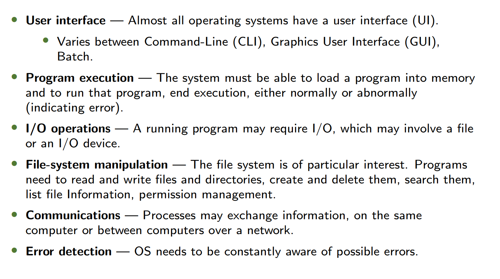
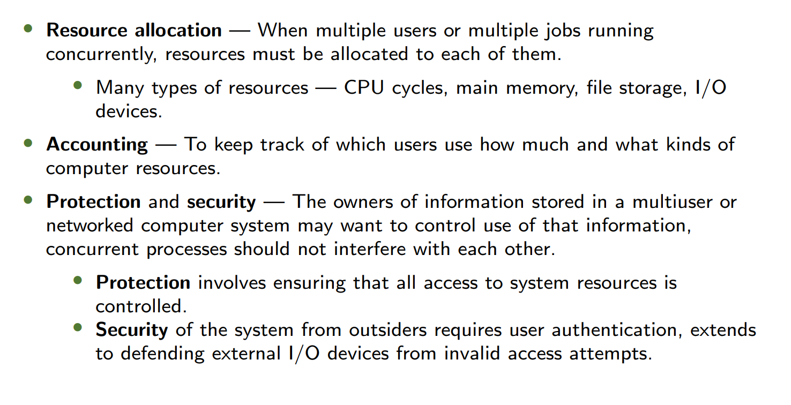
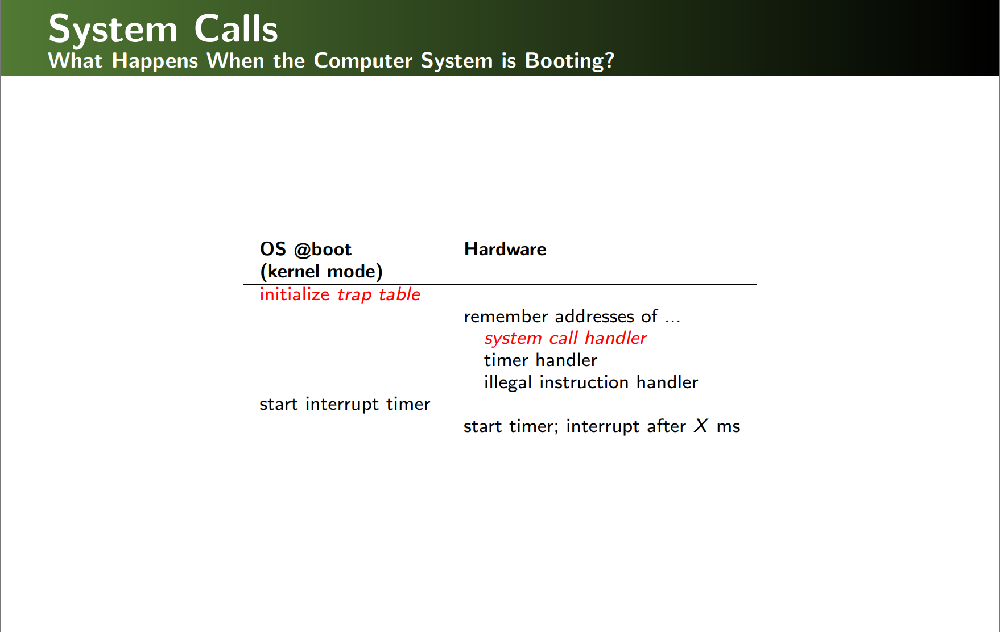
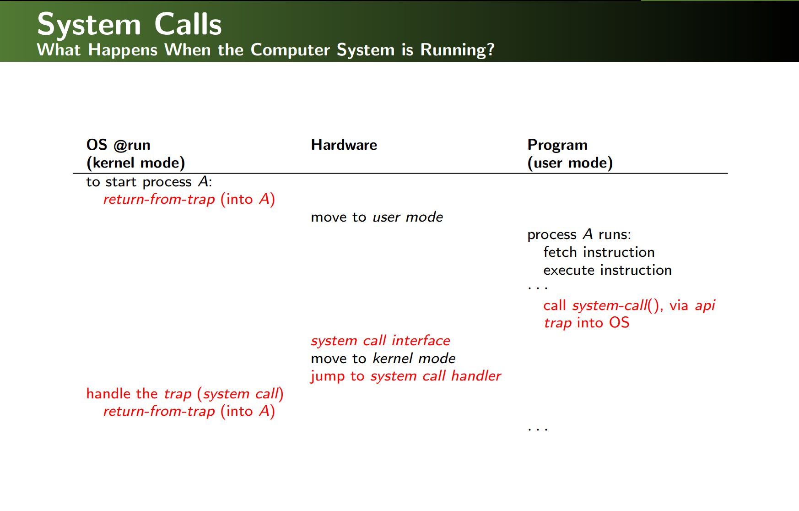
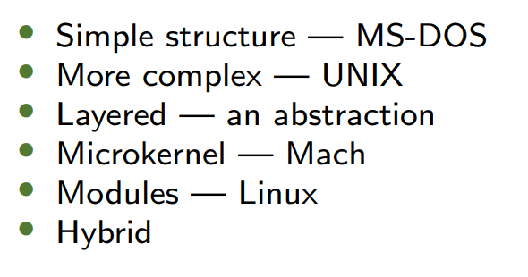

1. Warm-up: OS Evolution 操作系统发展史
Generations of OS 历代操作系统
| Generation 代次 | Technology 技术 | Key Features 关键特性 |
|---|---|---|
| 1st (1945-1955) | Vacuum Tubes 电子管 | - Libraries of functions (函数库) - Human-operated batch systems (人工批处理系统) |
| 2nd (1955-1965) | Transistors 晶体管 | - Dual-mode protection (双模式保护) - System calls introduced (引入系统调用) |
| 3rd (1965-1980) | Integrated Circuits 集成电路 | - Multiprogramming (多道程序设计) - Long-term scheduling (长期调度) |
| 4th (1980-now) | LSI/VLSI 大规模集成电路 | - Timesharing (分时系统) - GUI, personal computing (图形界面与个人计算) |
Key Transition: From hardware-centric to user-centric design.
关键转变：从以硬件为中心到以用户为中心的设计。
2. Operating System Services 操作系统服务
User-Centric Services 面向用户的服务

System-Centric Services 面向系统的服务

3. User Operating System Interface 用户接口
Types of Interfaces 接口类型
| Type 类型 | Description 描述 | Examples 示例 |
|---|---|---|
| CLI 命令行 | Text-based commands (基于文本的命令) | Linux shell, Windows CMD |
| GUI 图形界面 | Visual icons/windows (可视化图标与窗口) | Windows Explorer, macOS Finder |
| Touchscreen 触屏 | Gesture-based input (基于手势的输入) | iOS, Android |
CLI vs. GUI:
- CLI offers finer control (e.g., scripting).
- GUI prioritizes usability (e.g., drag-and-drop).
CLI vs. GUI：CLI提供更精细控制（如脚本），GUI侧重易用性（如拖拽操作）。
4. System Calls 系统调用
Implementation 实现机制
- APIs (e.g., POSIX, Win32) abstract system calls for portability.
- API（如POSIX、Win32）抽象系统调用以提高可移植性。
- Parameter Passing 参数传递方法：
- Registers 寄存器传递 (Fast but limited).
- Memory Block 内存块传递 (Linux/Solaris).
- Stack 栈传递 (Flexible for complex calls).
Execution Flow 执行流程
- Trap to kernel mode (陷入内核态).
- Handler executes via trap table (通过中断向量表执行处理程序).
- Return to user mode with results (返回用户态并带回结果).
Example: open() system call for file access.
示例：文件访问的open()系统调用。


5. Types of System Calls 系统调用类型
| Category 类别 | Functions 功能 |
|---|---|
| Process Control 进程控制 | fork(), exit(), wait() (创建/终止进程，进程同步). |
| File Management 文件管理 | open(), read(), write() (文件操作). |
| Device Management 设备管理 | ioctl(), read() (设备控制与数据读写). |
| Communication 通信 | pipe(), shmget() (进程间通信). |
| Information maintenance 信息维护 | get/set time or date... |
| Protection 保护 | control access to resources get and set permissions allow and deny user access... |
6. OS Structure 操作系统结构
Design Approaches 设计方法
| Model 模型 | Pros 优点 | Cons 缺点 |
|---|---|---|
| Monolithic 单体结构 | High performance (e.g., Linux) 高性能 | Difficult to debug/modify 难以调试/修改 |
| Microkernel 微内核 | Secure/portable (e.g., Mach) 安全/可移植 | Slower due to message passing 消息传递慢 |
| Hybrid 混合结构 | Balances performance/flexibility (e.g., Windows NT) 平衡性能与灵活性 | Complex design 设计复杂 |

7. Key Concepts 核心概念
Policy vs. Mechanism 策略与机制
- Mechanism (How): E.g., timer interrupt implementation.
- 机制（如何做）：如定时器中断的实现。
- Policy (What): E.g., CPU scheduling algorithm (FIFO vs. Round-Robin).
- 策略（做什么）：如CPU调度算法（FIFO vs. 轮询）.
Separation Benefit: Policies can change without modifying mechanisms.
分离优势：策略变更无需修改机制代码。
8. After Class Exercise 课后练习